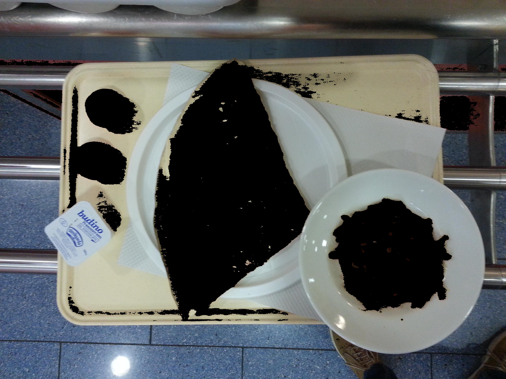
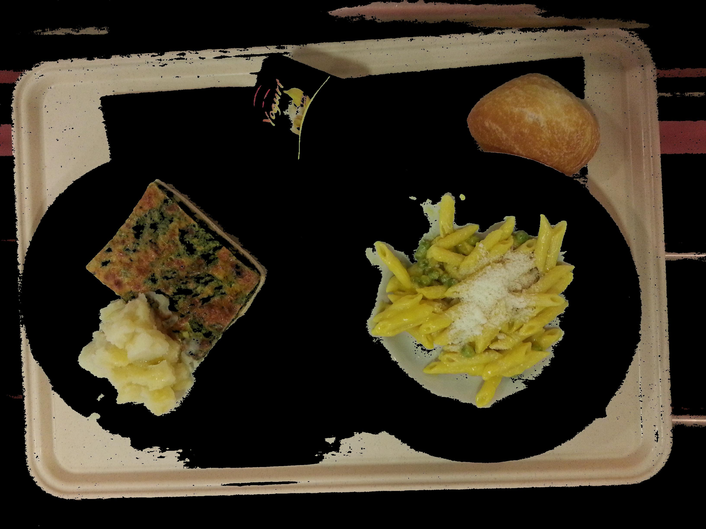
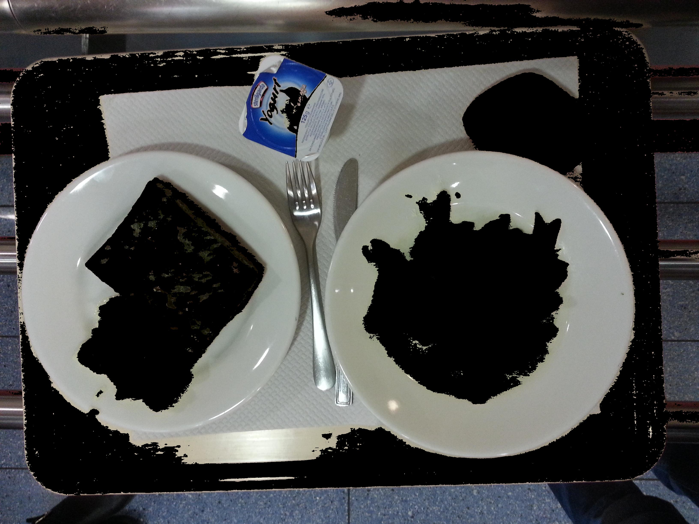
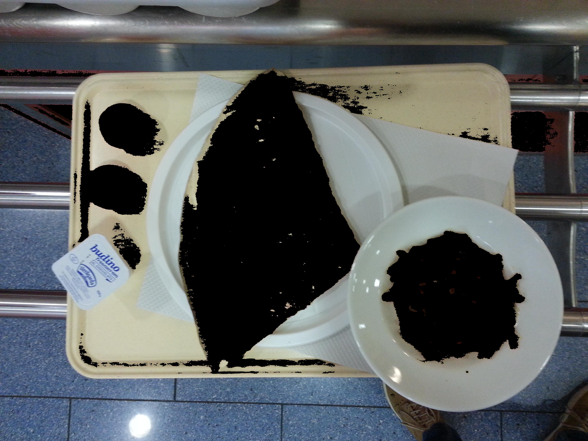
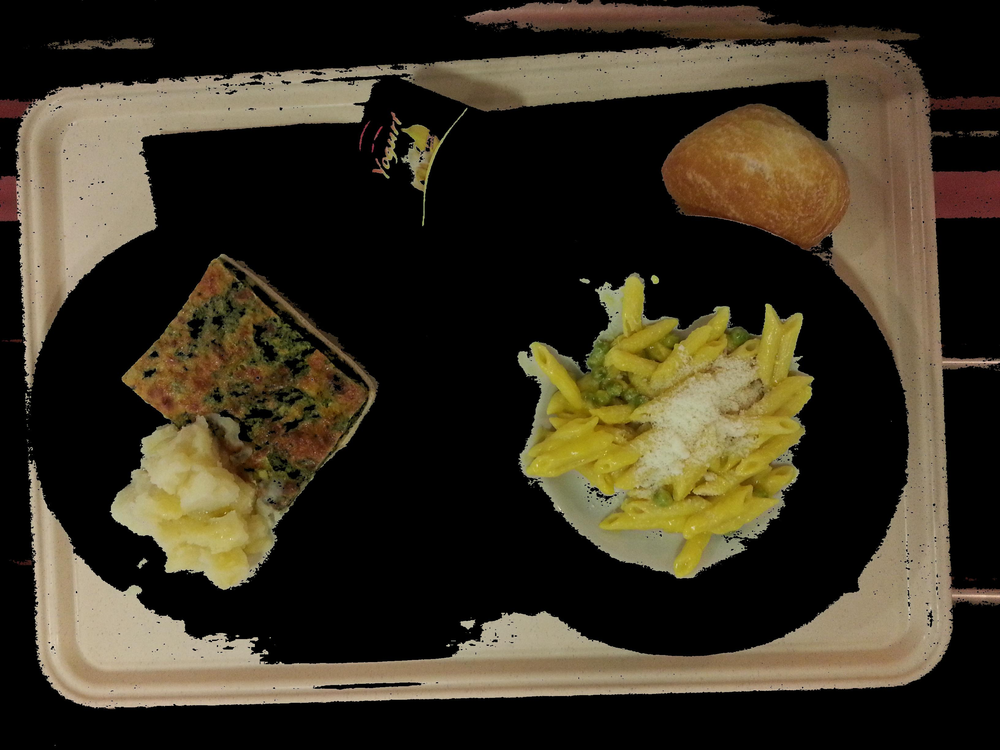
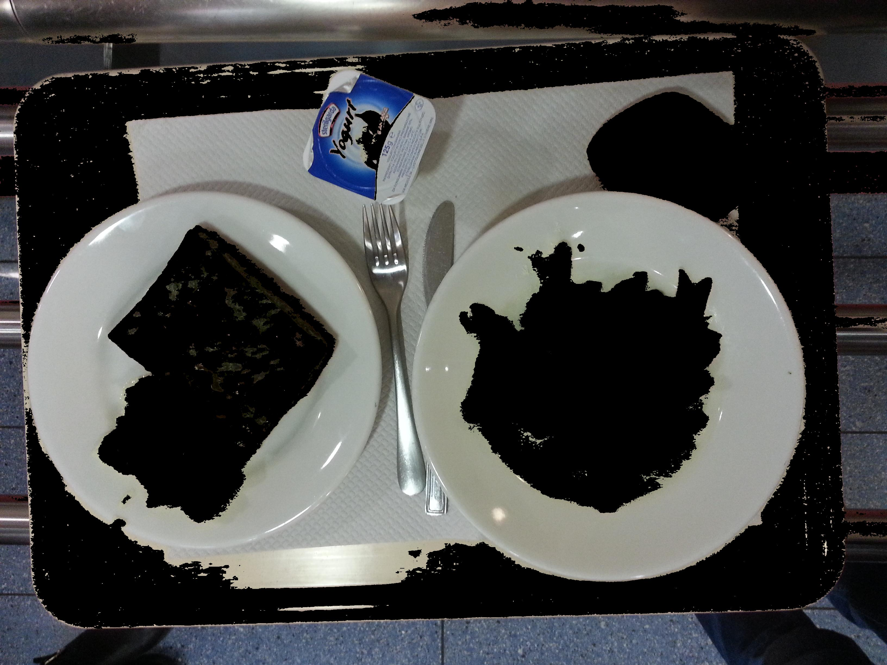
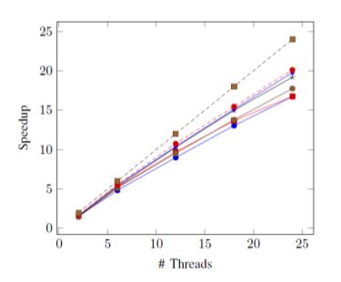
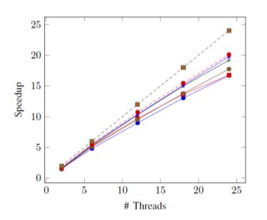

Sneha Jhaveri
About Me
Hi, I am an aspiring data scientist, currently pursuing a Masters in Data Science from the University of British Columbia, Vancouver. I have 3+ years of experience as a Software Developer and have also worked on predictive modeling, natural language processing & data mining for gaining insights from large datasets. I'm passionate about building scalable technological solutions by leveraging the vast data available us to create a meaningful impact in the everyday lives of people. When I am not wrangling data, you can find me curled up with a good fiction book or watching my favorite sitcom on repeat.
Education
2010-2022

University of British Columbia, Vancouver, Canada
2021-2022
Master of Data Science
CGPA: 4.0/4.0 (Expected to complete in July 2022)
National Institute of Technology Karnataka, Surathkal, India
2014-2018
Bachelor of Technology, Information Technology
Indian School, Bahrain
2010-2014
Higher Secondary (CBSE): 92% (2012-2014)
Secondary (CBSE): 10/10 CGPA (2010-2012)
Work Experience
Associate Software Developer | Pune, India
- Built a Regression-based staffing model, for the bank's Service Desk to efficiently handle bank-wide traffic of IT Related issues.
- Worked on an in-house tool for translating German customer feedback into English and further analyze the feedback to understand how end-user experience can be enhanced.
- Actively involved in improving the customer experience of an end user-facing chatbot that caters to 105,000+ users around the bank, by building a model based on NLP and Text Analytics, to analyze failed user intents and bot conversations.
- Worked on a Cost Management Tool - 'MyBill' which allows employees to decommission software/hardware allocated to them and manage their costs in the Bank.
Worked under the guidance of Prof. Uday Khedker to build a utility consisting of a DOT Parser along with Graph-based Algorithms to automate the analysis of heap memory graphs, which helps in optimizing memory allocation of programs and make them more efficient.
Worked under the guidance of Dr.Sowmya Kamath S. to understand language processing and it's various applications. Built a QoS based bidirectional recommendation model using hybrid collaborative filtering techniques to recommend web services to customers and also to recommend potential consumers to service providers of web services. https://halelabnitk.github.io
Developed and tested a payments module to manage transactions with customers for their B2B services using Java, Selenium Web Driver, and JUnit Framework.
Awards & Publications
AMD
Awarded "AMD Best Student Project Award" for B.Tech Capstone Project on "Contextual Object Relationship Identification for Anomaly Detection and Image Enhancement" among 200+ other university projects. An important real word application of the project was to remove out-of-context objects from selfies and detecting alerts in smart cities.
IEEE Pacific Neighbourhood Consortium 2018 - CA, USA
Sneha Jhaveri, et al., "A QoS and QoE based integrated model for bidirectional web services recommendation". Paper accepted at the Pacific Neighborhood Consortium (PNC) 2018- CA, USA.
DABBLE - Deutsche Bank's Global Data Science Competition
Winner of the global hackathon on 'Stock Price Index Prediction' with 225 participating teams across 70 locations.
Technology India Shout Out Award - 2020
Received the award at Deutsche Bank for my contribution during the pandemic for implementing a system for resolving the infrastructure issues being faced globally by employees working from home.
Spot Excellence Award - 2019
Awarded the "Spot Excellence Award" at Deutsche Bank for valuable contribution in implementing a end-end 'Optimal Regression based Staffing model'.
Projects

Organisations
Women in Data Science Vancouver (DataCan network)
Volunteer (2021 onwards)

Association of Computing Machinery - NITK Chapter
Treasurer & Vice President (2016 - 2018)
Actively involved in ACM - NITK Chapter

National Service Scheme (NSS)
Executive Member (2015-18)
Women in Technology, Deutsche Bank
Member (2020 - 2021)
ENGINEER Fest - Organizing Committee
2015 - 2017
Involved in organizing various technical events during my undergraduate at NITK.
 





 
